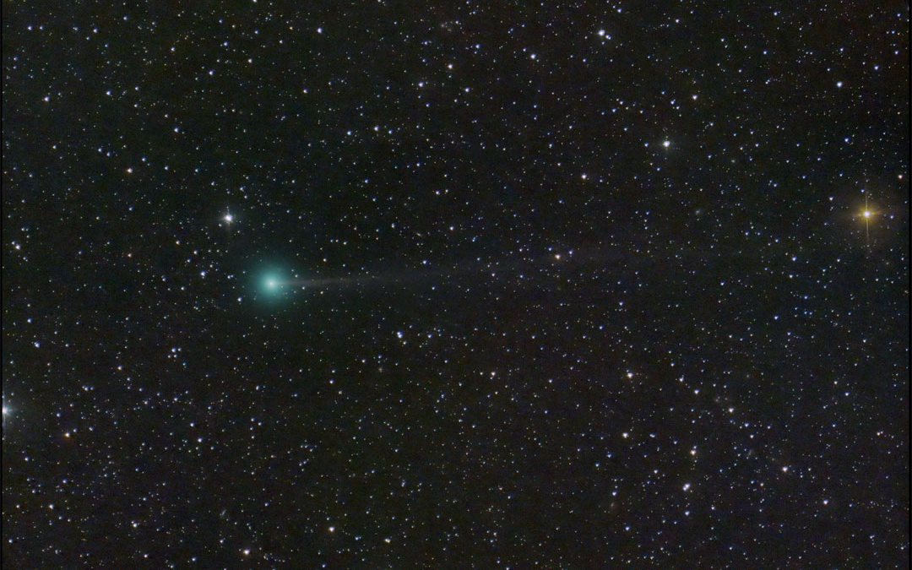
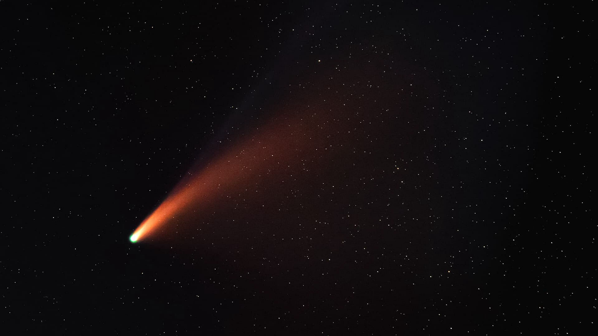
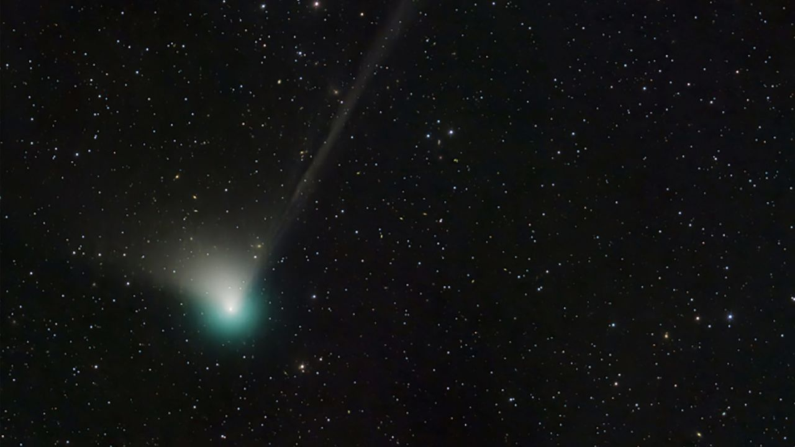
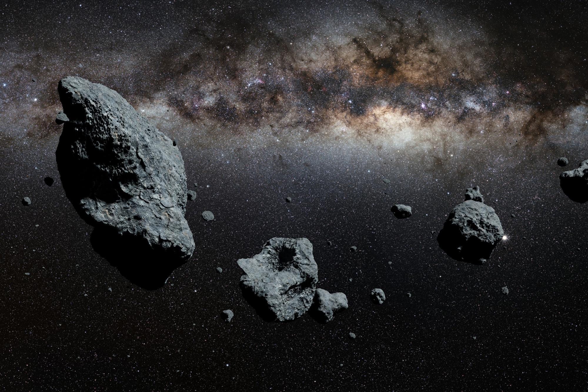
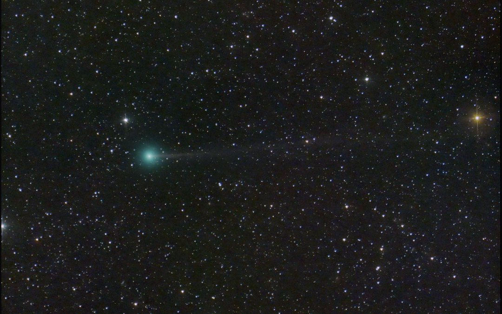
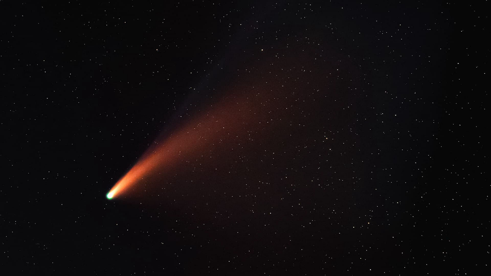
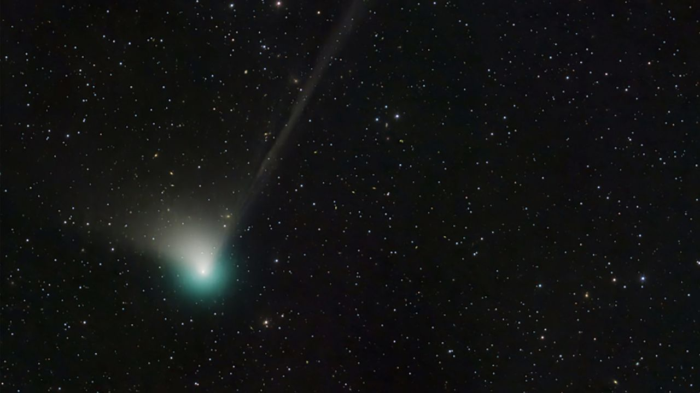
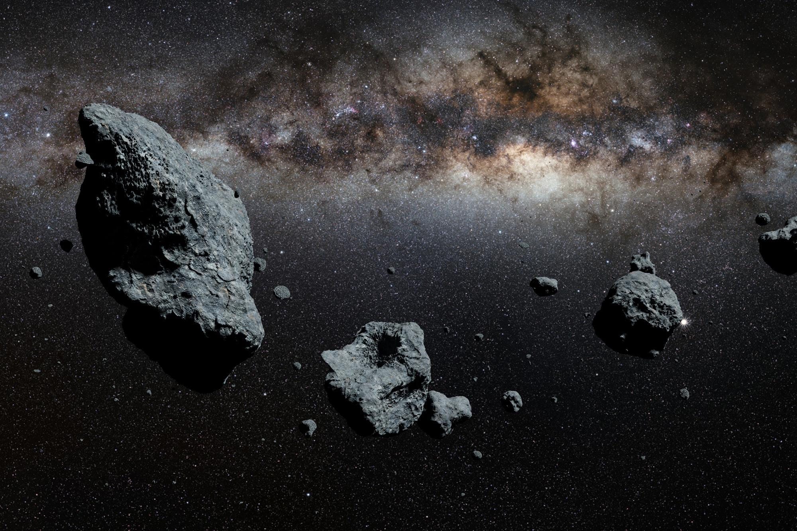
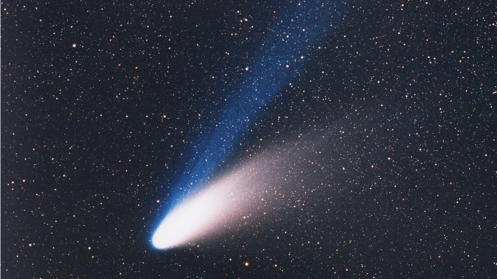
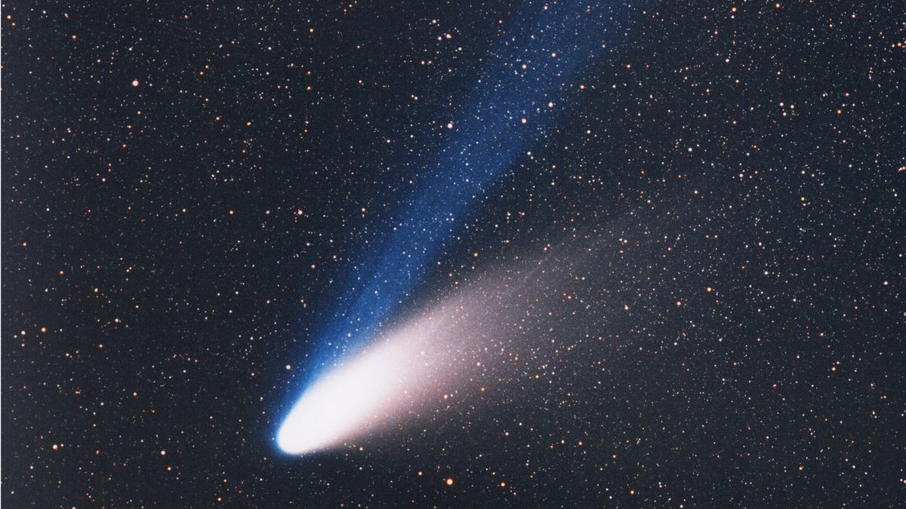

Кометы и астероиды
Добро пожаловать в мир комет и астероидов!
На нашем сайте вы найдете свежие новости о небесных телах,
сможете связаться с ведущими экспертами в области астрономии и узнать о последних открытиях и исследованиях.
Каждый день в космосе происходит что-то невероятное, и у вас есть возможность быть в курсе всех событий.
Мы предлагаем специальные устройства для изучения комет и астероидов.
Отправив заявку на исследование, вы легко сможете погрузиться в мир открытий и,
вероятно, открыть новый космический объект. Наши устройства обеспечат вам высокую точность и надежность при проведении исследований.
Кометы и астероиды представляют большой научный интерес, потому что могут содержать важную информацию о происхождении
Солнечной системы. Исследование этих небесных тел поможет расширить наши знания о Вселенной и внести вклад в развитие астрономии.
Не упустите возможность стать частью астрономического сообщества!
Ваши возможности
Узнайте о последних открытиях в области комет и астероидов, о новых исследованиях и уникальных наблюдениях! Мы расскажем вам о кометах и астероидах, которые могут представлять опасность для нашей планеты, вы сможете следить за всеми актуальными новостями об этом.
Узнать большеИзучить
На нашей странице сайта вы сможете узнать общие сведения о кометах и астероидах. Мы собрали для вас самую актуальную информацию о кометах и астероидах. Ознакомьтесь с основными фактами и терминами, связанными с ними.
Узнать большеИсследовать
Кометы и астероиды хранят множество секретов. Исследование этих небесных тел может помочь нам понять происхождение Солнечной системы, а также развить новые технологии для исследования космоса. Исследуйте космос вместе с нами!
Узнать большеГалерея небесных тел
 







 
